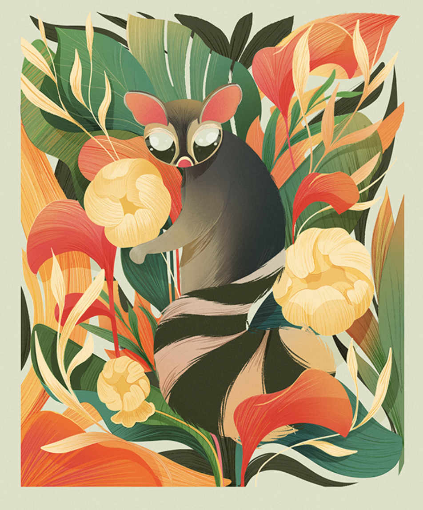

Illustration created for After Five Studio's reimagined Mexican Lottery app, depicting the cacomixtle — a curious endemic nocturnal animal from the Valley of Mexico — in a personal and colourful interpretation of the classic Lotería card.
View on Behance →